容器docker技术
我们先看看很久很久以前，服务器是怎么部署应用的！
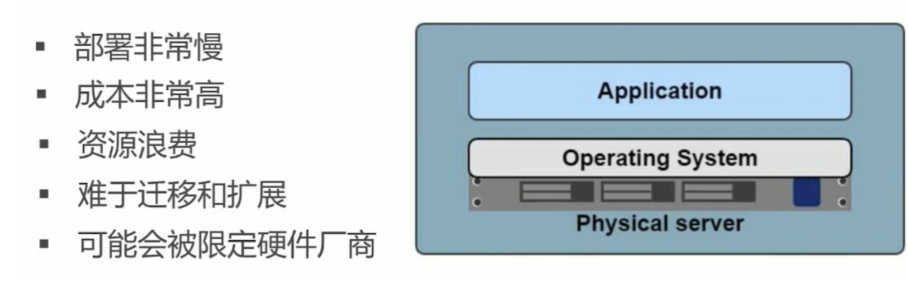
由于物理机的诸多问题，后来出现了虚拟机。
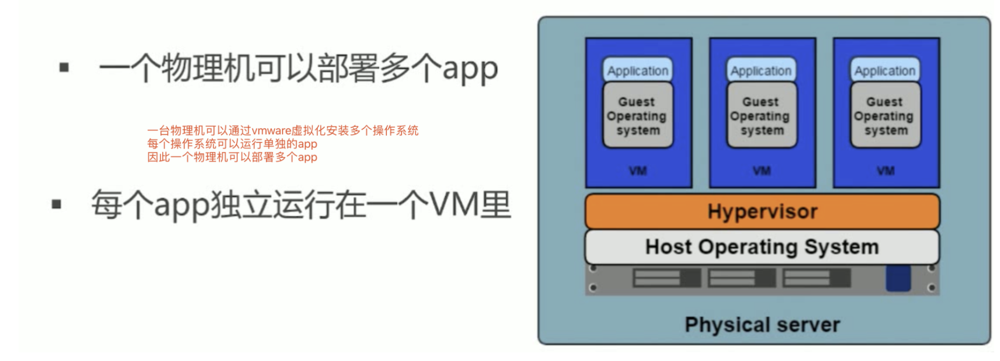
但是虚拟化也是有局限性的，每一个虚拟机都是一个完整的操作系统，要分配系统资源，虚拟机多道一定程度时，操作系统本身资源也就消耗殆尽，或者说必须扩容。
例如上一篇，超哥讲解的kvm，你所创建的资源，也都会消耗宿主机的资源，而且也都太重了。
创建一个虚拟机去运行程序，费劲！
例如咱们前面所学的web集群部署，9台机器节点，9个虚拟机吗？费劲！
1.为什么学docker
某公司的产品运行在内部的虚拟化平台中，如openstack，也就是我们所学的KVM虚拟化，创建虚拟机。
但是不断增加的云端应用，增加了对硬件资源的消耗，不断的创建虚拟机，给公司带来了难题，公司已经在云平台上运行了多台云主机，消耗了大量的硬件资源。
怎么才能够高效的利用硬件资源实现云服务呢？
容器技术，此时就派上用场了。
Openstack
openstack是云管理平台，其本身并不提供虚拟化功能，真正的虚拟化能力是由底层的hypervisor（如KVM、Qemu、Xen等）提供。 所谓管理平台，就是为了方便使用而已。
如果没有openstack，一样可以通过virsh、virt-manager来实现创建虚拟机的操作，只不过敲命令行的方式需要一定的学习成本，对于普通用户不是很友好。
openstack是一个完整的web平台，通过各个组件创建虚拟机，管理网络，CPU，磁盘资源。
kvm
KVM是最底层的hypervisor，是用来模拟CPU的运行，然鹅一个用户能在KVM上完成虚拟机的操作还需要network及周边的I/O支持，所以便借鉴了qemu进行一定的修改，形成qemu-kvm。
但是openstack不会直接控制qemu-kvm，会用一个libvirt的库去间接控制qemu-kvm。
qemu-kvm的地位就像底层驱动来着。
kvm是linux虚拟化的核心管理技术。
docker的诞生
Docker 公司位于旧金山,原名dotCloud，底层利用了Linux容器技术（LXC）（在操作系统中实现资源隔离与限制）。为了方便创建和管理这些容器，dotCloud 开发了一套内部工具，之后被命名为“Docker”。
Docker就是这样诞生的。
Hypervisor： 一种运行在基础物理服务器和操作系统之间的中间软件层，可允许多个操作系统和应用共享硬件 。常见的VMware的 Workstation 、ESXi、微软的Hyper-V或者思杰的XenServer。
Container Runtime：通过Linux内核虚拟化能力管理多个容器，多个容器共享一套操作系统内核。因此摘掉了内核占用的空间及运行所需要的耗时，使得容器极其轻量与快速。
2.容器技术
Docker最初是DotCloud公司在法国期间发起的一个公司内部项目，后来以Apache2.0授权协议开源，代码在Github上维护。
Docker是基于Google公司推出的Golang语言开发而来，基于Linux内核的Cgroups、NameSpace，以及Union FS等技术，对进程进行封装隔离，属于操作系统层面的虚拟化技术。
由于隔离的进程独立于宿主机和其他隔离的进程，也被称之为容器。
最初的Docker是基于LXC的，后来去除LXC转而使用自行开发的Libcontainer。
Docker被定义为开源的容器引擎，可以方便的对容器进行管理。例如对镜像打包封装，引入Docker Registry对镜像统一管理。
利用Docker可以实现开发，测试，生产环境的部署一致性，极大的减少运维成本。
docker的强大在于通过操作系统层面的虚拟化实现进程隔离，因此docker容器进程运行后，不需要像虚拟机一样的一个完整的OS对系统资源的损耗，因此很轻量级，以及高级的资源利用率。
红帽官网的虚拟化文章
https://www.redhat.com/zh/topics/virtualization
维基百科，什么是操作系统虚拟化
https://zh.wikipedia.org/zh-cn/%E4%BD%9C%E6%A5%AD%E7%B3%BB%E7%B5%B1%E5%B1%A4%E8%99%9B%E6%93%AC%E5%8C%96
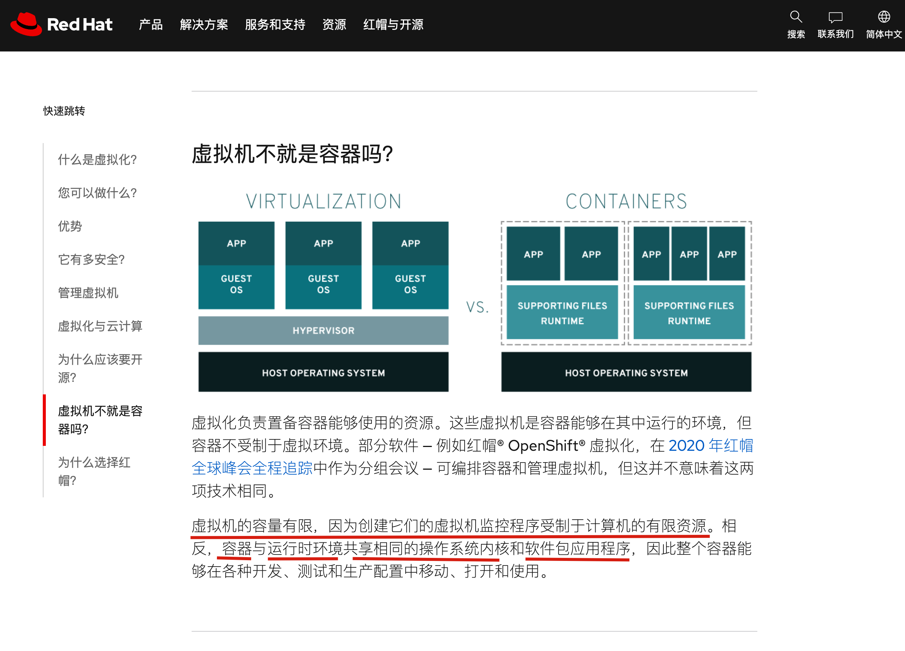
3.容器和虚拟机的差异
传统虚拟机技术
虚拟机是虚拟出一套硬件，在其上面运行一个完整的操作系统，例如我们使用KVM，指定系统镜像，然后装系统，最终可以使用，在该系统上再运行所需的应用程序。
KVM创建虚拟机时，指定较少的cpu，内存，硬盘等资源，虚拟机性能较低。
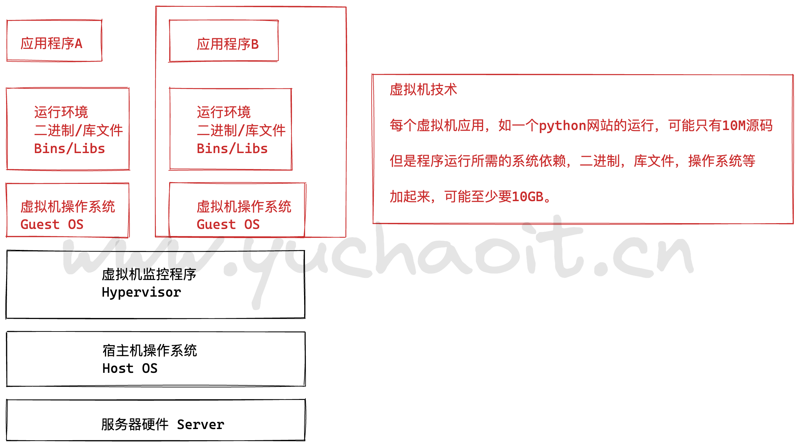
容器技术⭐️⭐️
容器内的应用程序直接运行在宿主机的内核上
容器内没有自己的内核
也没有对硬件进行虚拟，因此容器比起虚拟机更为轻便。
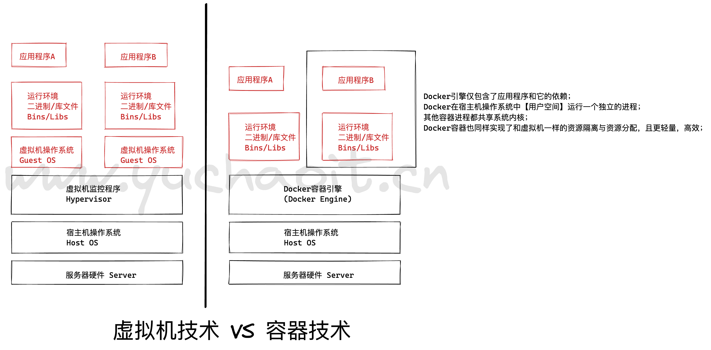
容器技术对比虚拟化
- 容器是直接提供宿主机的性能，而kvm虚拟机是分配宿主机硬件资源，性能较弱
- 同样配置的宿主机，最多可以启动10个虚拟机的话，可以启动100+的容器数量。
- 启动一个KVM虚拟机，得有一个完整的开机流程，花费时间较长，或许得20S，而启动一个容器只需要1S。
- KVM需要硬件CPU的虚拟化支持，而容器不需要。
| 特性 | 容器 | 虚拟机 |
|---|---|---|
| 启动 | 秒级 | 分钟级 |
| 硬盘使用 | 一般为 MB | 一般为 GB |
| 性能 | 接近原生 | 弱 |
| 系统支持量 | 单机支持上千个容器 | 一般几十个 |
| 资源隔离 | 安全隔离 | 完全隔离 |
4.为什么选择docker
docker更高效的利用系统资源
容器不需要进行硬件虚拟化以及运行一个完整操作系统的额外开销，docker对系统资源的利用率更高，无论是应用执行，文件存储，还是在内存消耗等方面，都比传统虚拟机更高效。因此一个同样配置的主机，可以运行处更多数量的容器实例。
更快的启动时间
传统的虚拟机启动时间较久，docker容器直接运行在宿主机的内核上，无须启动一个完整的操作系统，因此可以达到秒级启动，大大的解决开发，测试，部署的时间。
一致性的环境
在企业里，程序从开发环境，到测试服务器，到生产环境，难以保证机器环境一致性，极大可能出现系统依赖冲突，导致难以部署等Bug。
然而利用docker的容器-镜像技术，提供了除了内核以外完整的运行时环境，确保了应用环境的一致性。
持续交付和部署
还是刚才所说的一致性的环境，对于开发和运维的人员，最希望的就是环境部署迁移别处问题，利用docker可以定制镜像，以达到持续集成，持续交付和部署。
通过Dockerfile来进行镜像构建，实现系统集成测试，运维进行生产环境的部署。
且Dockerfile可以使镜像构建透明化，方便技术团队能够快速理解运行环境部署流程。
更轻松的迁移
Docker可以在很多平台运行，无论是物理机，虚拟机，云服务器等环境，运行结果都是一致的。用于可以轻松的将一个平台的应用，迁移到另一个平台，而不用担心环境的变化，导致程序无法运行。
docker能做什么
- 可以把应用程序代码及运行依赖环境打包成镜像，作为交付介质，在各环境部署
- 可以将镜像（image）启动成为容器(container)，并且提供多容器的生命周期进行管理（启、停、删）
- container容器之间相互隔离，且每个容器可以设置资源限额
- 提供轻量级虚拟化功能，容器就是在宿主机中的一个个的虚拟的空间，彼此相互隔离，完全独立
docker使用情况
Google从2004年起就已经开始使用容器技术了，并于2006年发布了Cgroups 和Imctfy项目。
Imctfy 是Google开源版本的容器栈，它提供了用来代替LXC的Linux应用容器。
Google云平台的高级软件工程师Joe Beda于2014 年在Gluecon. 上做了个关于Google如何使用Linux容器技术的报告。报告中声称现在Google所有的应用都是运行在容器中的。
Google 每周要启动超过20亿个容器，每秒钟要启动超过3 000个容器，这还不包括那些长期运行的容器。Google 同样也正在将容器集成到Google云平台中。
Google于2014年推出了开源容器集群管理系统-Kubernetes, Kubernetes 就构建在Docker之上。
企业与容器集群
京东容器集群
2013年，京东弹性云从KVM起步。京东弹性云首先应用于京东私有云上。在选择Docker之前，尝试了KVM虚拟化方案，各方反馈性能不够好，无法满足大促的需求。
2014年10月，京东开始思考用Docker重构，在2014年底，决定采用Docker容器化方案，通过基于Docker镜像的方式进行发布，其快速的弹性伸缩能力适合京东的大规模生产需求，并且其具备轻量、高性能和便捷性的优势。
京东首先使用图片系统来验证其性能和弹性伸缩能力，之后再逐步推广到如单品页这样的核心系统，并进行网络的优化，以满足京东应用的性能。
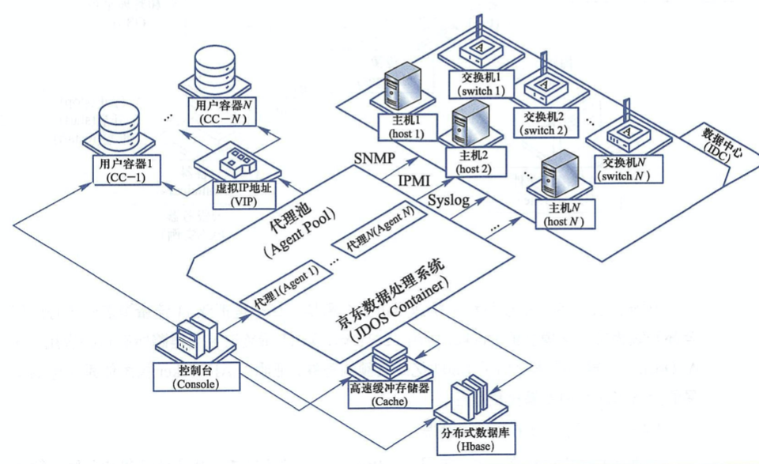
淘宝容器集群
T4是阿里在2011年的时候基于LinuxContainer ( LXC )开发的容器技术基础设施。
T4是从阿里内部的资源管理和日常运维中土生土长出来的产品，在诞生的第一天就针对内部基础设施、运维工具甚至运维习惯做了很多特别的设计。 阿里从2015年开始对Docker和T4做了些修改整合后,将两者融合为了一个产品，相当于既让T4具备了Docker的镜像能力,又让Docker具备了T4具有的对内部运维体系的友好性，并且能够运行在内部的AliOS5u7和2.6.32内核上。
这个产品在阿里内部称为AliDocker。
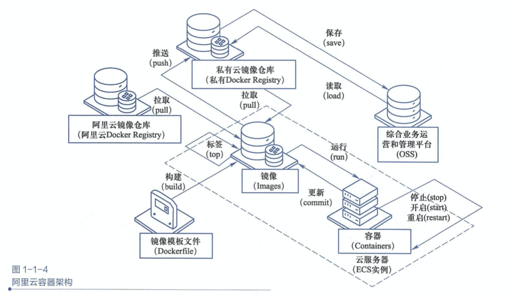
阿里成立专门的项目组推进docker应用，目标是把双11流量覆盖的核心应用，全部升级为镜像化的Docker应用。
5.Docker架构
用docker前运维难题
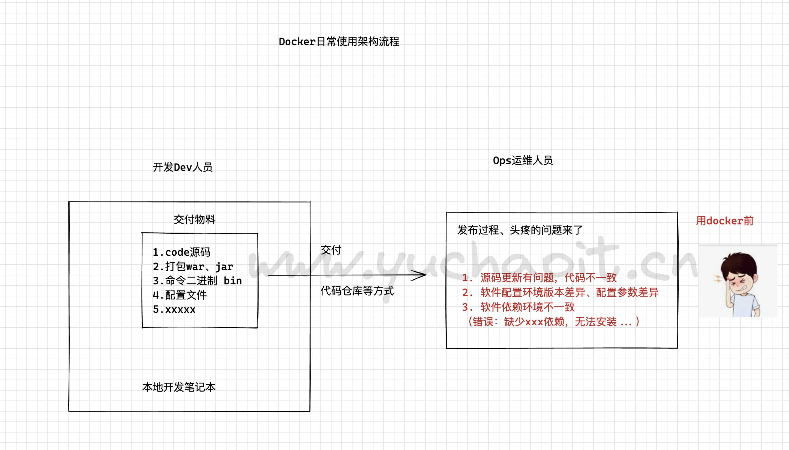
用docker后的运维架构
前提是，你们的开发、运维都好好的学习了docker技术，否则docker带来的，是更复杂的维护成本。
基于docker的软件交付流程
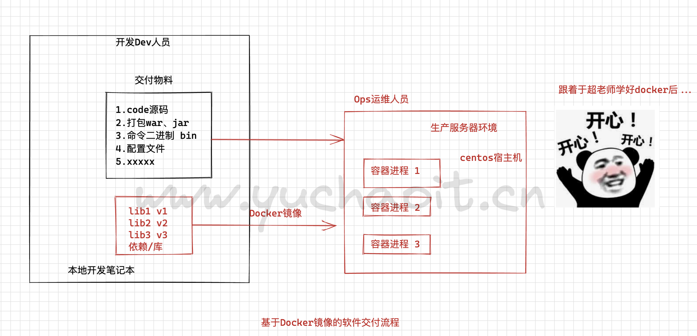
docker引擎架构
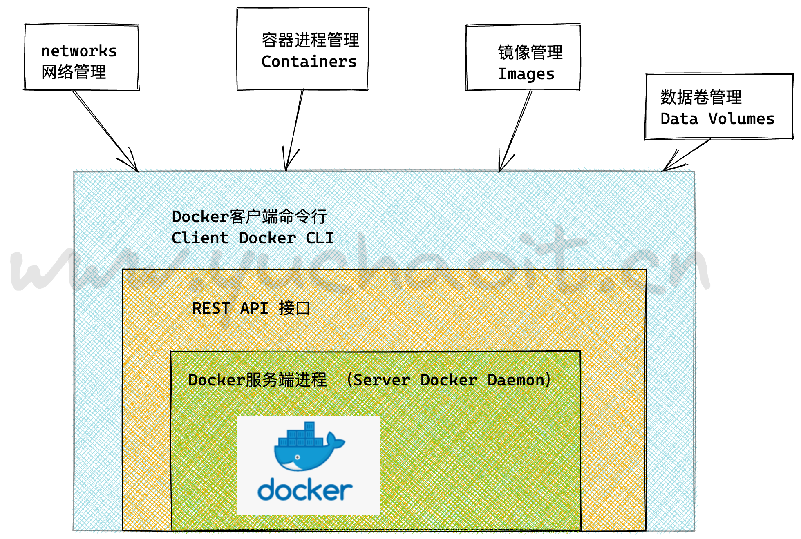
Docker Daemon
安装使用Docker，得先运行Docker Daemon进程，用于管理docker，如：
- 镜像 images
- 容器 containers
- 网络 network
- 数据卷 Data Volumes
Rest接口
提供和Daemon交互的API接口
写代码，直接和docker主进程交互，对容器管理。
Docker Client
客户端使用REST API和Docker Daemon进行访问。
运维常用的docker维护命令。
Docker组件工作流
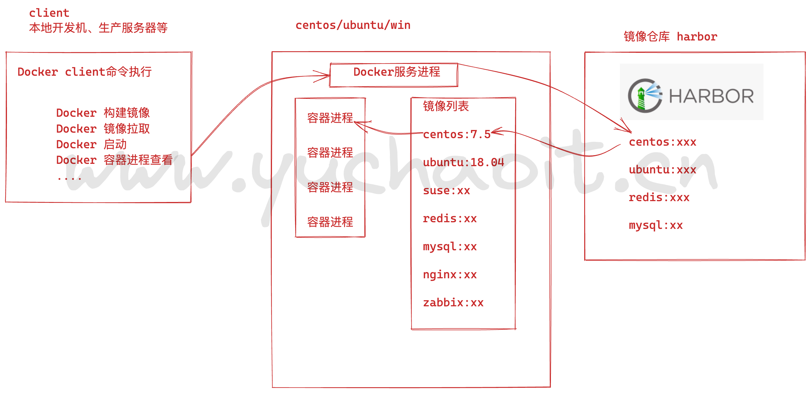
Images
镜像是一个特殊的文件系统，除了提供容器运行时所需的程序、库、资源、配置等文件外，还包含了一些为运行时准备的配置参数（如匿名卷、环境变量、用户等）。
镜像不包含任何动态数据，其内容在构建之后也不会被改变。
镜像是一个只读模板，用于创建容器，也可以通过Dockerfile文本描述镜像的内容。
镜像的概念类似于编程开发里面向对象的类，从一个基类开始（基础镜像Base Image）
构建容器的过程，就是运行镜像，生成容器实例。
Docker镜像的描述文件是Dockerfile，包含了如下的指令
- FROM 定义基础镜像
- MAINTAINER 作者
- RUN 运行Linux命令
- ADD 添加文件/目录
- ENV 环境变量
- CMD 运行进程
例如：一个镜像可以包含一个完整的ubuntu操作系统环境，里面仅安装了mysql或用户需要的其他应用程序。
docker镜像实际上是由一层一层的系统文件组成，这种层级的文件系统被称为UnionFS( Union file system 统一文件系统)，镜像可以基于dockerfile构建，dockerfile是一个描述文件，里面包含了若干条密令，每条命令都会对基础文件系统创建新的层次结构。
Container
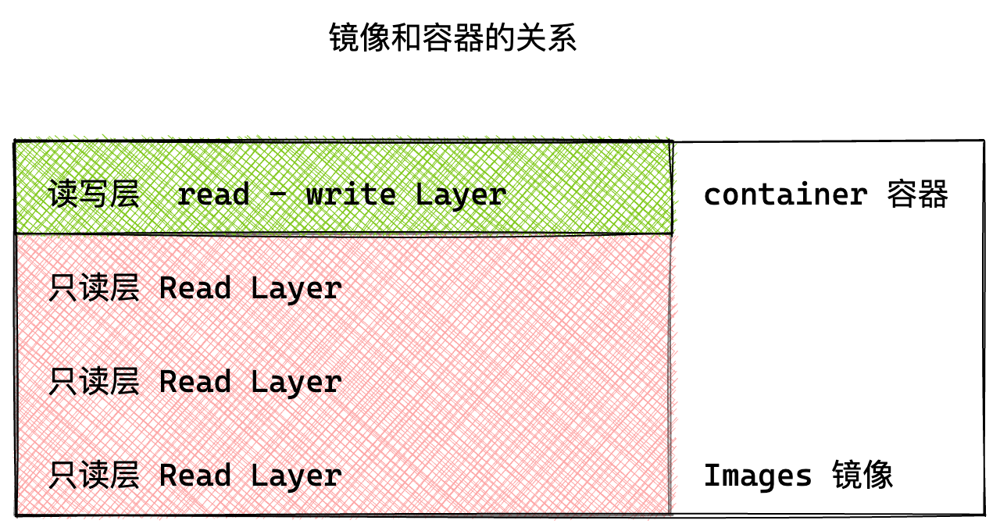
容器和镜像的关系，像程序设计中的实例和类一样，镜像是静态的定义，容器是镜像运行时的实体。
容器可以被创建、启动、停止、删除、暂停等。
区别在于容器的最上层是一个可读可写的层。
一个镜像可以启动多个容器。
应用可以包含一个或一组容器。
docker 的镜像概念类似虚拟机的镜像。
是一个只读的模板，一个独立的文件系统，包括运行容器所需的数据，可以用来创建新的容器。
总之，docker容器=镜像+可读写层
容器是一个镜像的运行实例，镜像 > 容器。
创建容器的过程
- 获取镜像，如
docker pull centos，从镜像仓库拉取 - 使用镜像创建容器
- 分配文件系统，挂载一个读写层，在读写层加载镜像
- 分配网络/网桥接口，创建一个网络接口，让容器和宿主机通信
- 容器获取IP地址
- 执行容器命令，如/bin/bash
- 反馈容器启动结果。
Registry
Docker镜像需要进行管理，docker提供了Registry仓库，其实它也是一个容器。可以用于可以基于该容器运行私有仓库。
也可以使用Docker Hub互联网公有镜像仓库。
（以后回来看）底层基石namespace与cgroup
先简单了解，后续再逐步深入学习。
Docker是使用容器container的平台，容器其实只是一个隔离的进程，除此之外啥都没有。
这个进程包含一些封装特性，以便和主机还有其他的容器隔离开。
一个容器依赖最多的是它的文件系统也就是image，image提供了容器运行的一切包括 code or binary, runtimes, dependencies, and 其他 filesystem 需要的对象。
容器在Linux上本地运行，并与其他容器共享主机的内核。
- 它运行一个独立的进程，占用的内存不比其他的filesystem多，因此它是轻量级的。
- 相比之下，虚拟机(VM)运行一个成熟的“guest”操作系统，通过hypervisor对主机资源进行虚拟访问。
- 一般来说，vm会产生大量开销，超出应用程序逻辑所消耗的开销。
这是docker之所以轻量级的一个原因，它和其他宿主机上的进程一样，直接使用宿主机本身的资源，不存在配置损耗，因此性能无损失。
其次，实现进程隔离，还是根本目的，我们不希望，程序的运行，将宿主机的环境修改的面目全非。
容器本质上是把系统中为同一个业务目标服务的相关进程合成一组，放在一个叫做namespace的空间中，同一个namespace中的进程能够互相通信，但看不见其他namespace中的进程。
一个独立的名称空间，可以简单理解为好比是一个虚拟机的概念。
Linux 内核上支持的功能namespace用于资源隔离，实现我们的本质需求，实现多个程序的隔离部署，不会相互影响。
Linux内核实现namespace的主要目的就是为了实现轻量级虚拟化（容器）服务。
- 每个namespace可以拥有自己独立的主机名、进程ID系统、IPC、网络、文件系统、用户等等资源。
- 在某种程度上，实现了一个简单的虚拟：让一个主机上可以同时运行多个互不感知的系统。
https://coolshell.cn/articles/17010.html
左耳朵耗子，技术骨灰级专家的docker博客。
当前Linux一共实现了6种不同类型的Namespace
| Namespace类型 | 系统调用参数 | 内核版本 | 隔离内容 |
|---|---|---|---|
| Mount Namespace | CLONE_NEWNS | 2.4.19 | 挂载点（文件系统） |
| UTS Namespace | CLONE_NEWUTS | 2.6.19 | 主机名与域名 |
| IPC Namespacce | CLONE_NEWIPC | 2.6.19 | 信号量、消息队列和共享内存 |
| PID Namespace | CLONE_NEWPID | 2.6.24 | 进程编号 |
| Network Namespace | CLONE_NEWNET | 2.6.29 | 网络设备、网络栈、端口等等 |
| User Namespace | CLONE_NEWUSER | 3.8 | 用户和用户组 |
Namespace的API主要使用如下3个系统调用：
- clone(): 创建新进程。
- unshare(): 将进程移出某个Namespace。
- setns(): 将进程加入到Namespace中。
cgroup
此外，为了限制namespace对物理资源的使用，对进程能使用的CPU、内存等资源需要做一定的限制。
这就是Cgroup技术，Cgroup是Control group的意思。
比如我们常说的4c4g的容器，实际上是限制这个容器namespace中所用的进程，最多能够使用4核的计算资源和4GB的内存。
简而言之，Linux内核提供namespace完成隔离，Cgroup完成资源限制。namespace+Cgroup构成了容器的底层技术（rootfs是容器文件系统层技术）。
docker容器进程的本质：
1. 开辟namespace独立的空间
2. 基于cgroup控制容器进程占用的计算资源
3. 基于rootfs提供文件系统
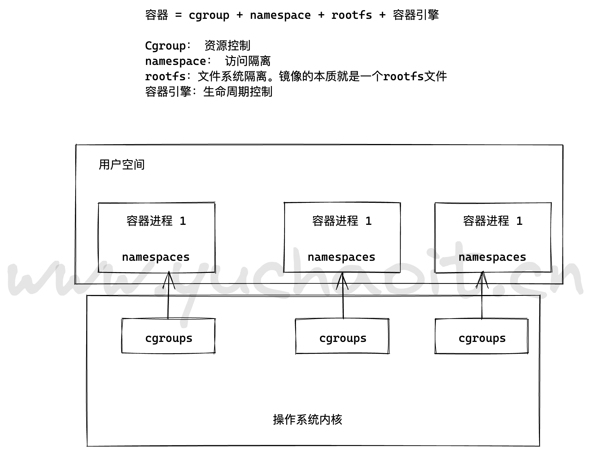
简单操作下cgroupgs
group 全称 Control Group。
Linux 操作系统通过 cgroup 可以设置进程使用 CPU、内存 和 IO 资源的限额。
cgroup 到底长什么样子呢？我们可以在 /sys/fs/cgroup 中找到它。
还是用例子来说明，启动一个容器，设置内存为512M
在 /sys/fs/cgroup/memory/docker 目录中，Linux 会为每个容器创建一个 cgroup 目录，以容器长ID 命名
对内存使用限制：
Docker 可以通过 -c 或 –cpu-shares 设置容器使用 CPU 的权重。如果不指定，默认值为 1024。
与内存限额不同，通过 -c 设置的 cpu share 并不是 CPU 资源的绝对数量，而是一个相对的权重值。
某个容器最终能分配到的 CPU 资源取决于它的 cpu share 占所有容器 cpu share 总和的比例。
换句话说：通过 cpu share 可以设置容器使用 CPU 的优先级。
比如在 host 中启动了两个容器：
docker run –name “containerA” -c 1024 httpd
docker run –name “containerB” -c 512 httpd
containerA 的 cpu share 1024，是 containerB 的两倍。当两个容器都需要 CPU 资源时，containerA 可以得到的 CPU 是 containerB 的两倍。
需要特别注意的是，这种按权重分配 CPU 只会发生在 CPU 资源紧张的情况下。如果 containerA 处于空闲状态，这时，为了充分利用 CPU 资源，container_B 也可以分配到全部可用的 CPU。
可以在这里找到设置的cpu
[root@ken1 ~]# cat /sys/fs/cgroup/cpu/docker/a1f00b2682796ec9d0c64c8356645ecaeba95c622b4d306124c01d17fd9e5829/cpu.shares
512
namespace理解
在每个容器中，我们都可以看到文件系统，网卡等资源，这些资源看上去是容器自己的。拿网卡来说，每个容器都会认为自己有一块独立的网卡，即使 host 上只有一块物理网卡。这种方式非常好，它使得容器更像一个独立的计算机。
Linux 实现这种方式的技术是 namespace。namespace 管理着 host 中全局唯一的资源，并可以让每个容器都觉得只有自己在使用它。换句话说，namespace 实现了容器间资源的隔离。
Linux 使用了六种 namespace，分别对应六种资源：Mount、UTS、IPC、PID、Network 和 User，下面我们分别讨论。
Mount namespace
Mount namespace 让容器看上去拥有整个文件系统。
容器有自己的 / 目录，可以执行 mount 和 umount 命令。当然我们知道这些操作只在当前容器中生效，不会影响到 host 和其他容器。
UTS namespace
简单的说，UTS namespace 让容器有自己的 hostname。 默认情况下，容器的 hostname 是它的短ID，可以通过 -h 或 --hostname 参数设置。
IPC namespace
IPC namespace 让容器拥有自己的共享内存和信号量（semaphore）来实现进程间通信，而不会与 host 和其他容器的 IPC 混在一起。
PID namespace
容器在 host 中以进程的形式运行。容器内进程的 PID 不同于 host 中对应进程的 PID，容器中 PID=1 的进程当然也不是 host 的systemd进程。也就是说：容器拥有自己独立的一套 PID，这就是 PID namespace 提供的功能。
Network namespace
Network namespace 让容器拥有自己独立的网卡、IP、路由等资源。
User namespace
User namespace 让容器能够管理自己的用户，host 不能看到容器中创建的用户。
查看ns信息
在/proc/$$/ns 目录下可以查看到当前进程所处的namespace信息
简要概括
1.namespace是linux内核提供的机制，专门用于实现轻量级的资源隔离；
因此可以让容器中的进程，仿佛在一个独立的操作系统里。
ps -ef即可看到效果
主要是如下的几个ns环境
主机名
信号
进程id编号
网络设备，端口等
文件系统
用户、组
2.cgroups技术
用于实现容器对资源的使用控制，主要作用是：
- 资源限制，如内存使用上限，一些java类的应用，占用内存会较多。
- 优先级分配，如CPU的切换，如磁盘IO、网络IO的速率对于任务运行的优先分配。
- 资源统计，统计进程对CPU、内存的使用时长与用量。
- 任务控制，可以实现进程暂停，恢复等。
6.docker入门总结
- 为了提供一种更加轻量的虚拟化技术，docker出现了
- 借助于docker容器的轻、快等特性，解决了软件交付过程中的环境依赖问题，使得docker得以快速发展
- Docker是一种CS架构的软件产品，可以把代码及依赖打包成镜像，作为交付介质，并且把镜像启动成为容器，提供容器生命周期的管理
- docker-ce，每季度发布stable版本。18.06，18.09，19.03
- 发展至今，docker已经通过制定OCI标准对最初的项目做了拆分，其中runC和containerd是docker的核心项目，理解docker整个请求的流程，对我们深入理解docker有很大的帮助
docker发展史
13年成立，15年开始，迎来了飞速发展。
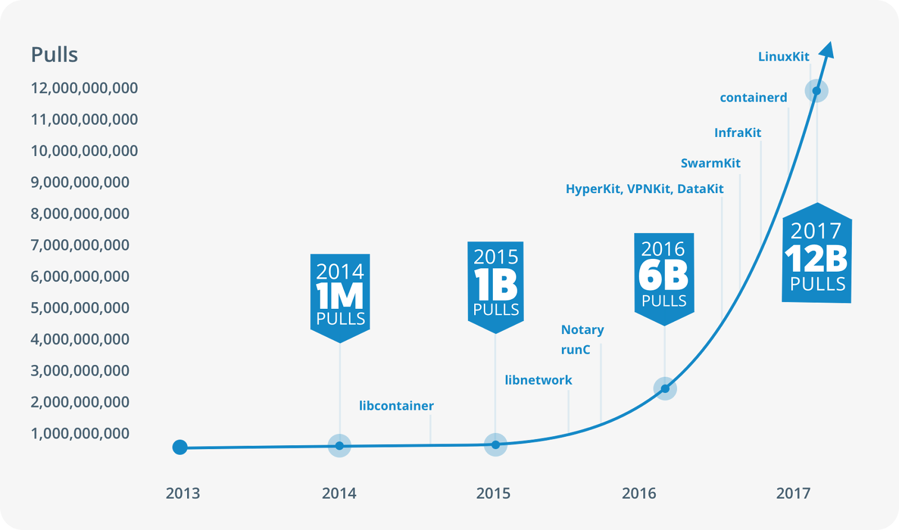
Docker 1.8之前，使用LXC，Docker在上层做了封装， 把LXC复杂的容器创建与使用方式简化为自己的一套命令体系。
之后，为了实现跨平台等复杂的场景，Docker抽出了libcontainer项目，把对namespace、cgroup的操作封装在libcontainer项目里，支持不同的平台类型。
2015年6月，Docker牵头成立了 OCI（Open Container Initiative开放容器计划）组织，这个组织的目的是建立起一个围绕容器的通用标准 。 容器格式标准是一种不受上层结构绑定的协议，即不限于某种特定操作系统、硬件、CPU架构、公有云等 ， 允许任何人在遵循该标准的情况下开发应用容器技术，这使得容器技术有了一个更广阔的发展空间。
OCI成立后，libcontainer 交给OCI组织来维护，但是libcontainer中只包含了与kernel交互的库，因此基于libcontainer项目，后面又加入了一个CLI工具，并且项目改名为runC (https://github.com/opencontainers/runc )， 目前runC已经成为一个功能强大的runtime工具。
Docker也做了架构调整。将容器运行时相关的程序从docker daemon剥离出来，形成了containerd。containerd向上为Docker Daemon提供了gRPC接口，使得Docker Daemon屏蔽下面的结构变化，确保原有接口向下兼容。向下通过containerd-shim结合runC，使得引擎可以独立升级，避免之前Docker Daemon升级会导致所有容器不可用的问题。
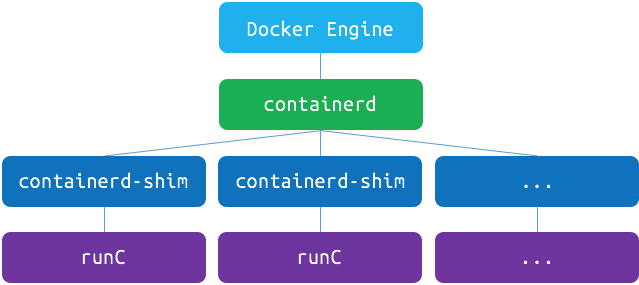
也就是说
- runC（libcontainer）是符合OCI标准的一个实现，与底层系统交互
- containerd是实现了OCI之上的容器的高级功能，比如镜像管理、容器执行的调用等
- Dockerd目前是最上层与CLI交互的进程，接收cli的请求并与containerd协作